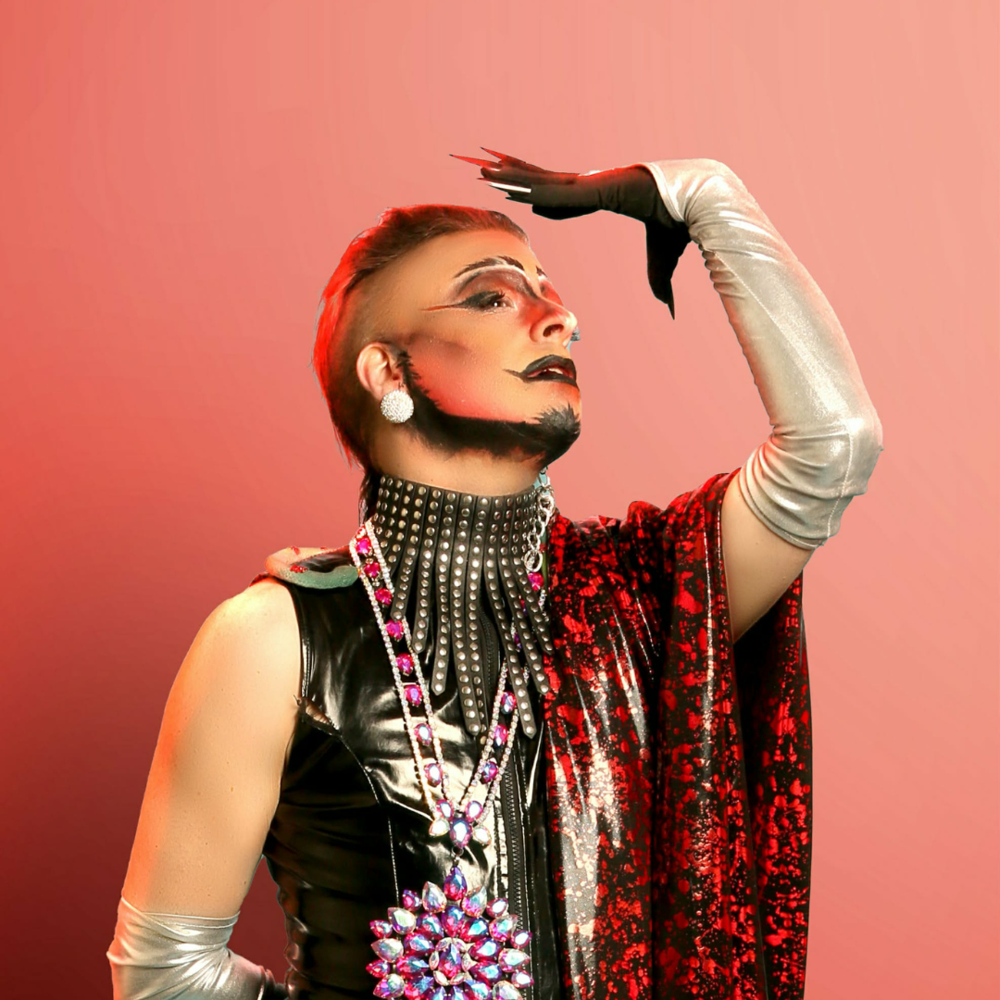

Pavé Pandemonium
Lincoln's own otherworldly drag king, Pavé Pandemonium, is equal parts artful chaos and hilariously bad taste. With two and a half years of performing under his belt, Pavé's charismatic rapid rise in the Nebraska drag scene has given everyone something to talk about. Inspired by Groucho Marx, Gerard Way, and Shakespeare's Oberon, Pavé credits drag with saving his life through artistic catharsis. Host of his very own talk show at Dame, Tea Time with Pavé, this entertainer snatched two titles in the fall of 2025: Mr. Fire and Brimstone and Mx. IDGAF. His other community work includes an in progress mural at Das Haus in Lincoln, an acrylic painting currently on display at Omaha For Us with the Gender Affirming Care Art Show, mutual aid activism, and generally aspiring to leave everywhere he goes better than he found it.
Jacinda Vortex
Jacinda Vortex is Omaha's very own hot mess express, having been onstage for both far too long and not long enough. Come drown in the currents of her river, as she manages to impress with her live vocals, stupefy with her lack of dancing ability, and astonish with her knack for tripping over nothing. Most famously, you may have seen her lose the Fresh Fish Pageant in 2025 to the now-reigning Miss Max, or you may have seen the forehead imprint she left on the wall at The Max after a number when she tripped over nothing, as mentioned before. Currently, she is on the family line for Reign 45 of the Imperial Court of Nebraska as a Lady to the Empress. She has used her position to help raise funds for local LGBTQIA+ focused non-profits, including a benefit for Voices In Alliance, Omaha's only explicitly queer-oriented theatre company. She is caught in the whirlpool, she is trapped in the maelstrom, she is JACINDA VORTEX, and she is here to make you ask yourself, “huh?”